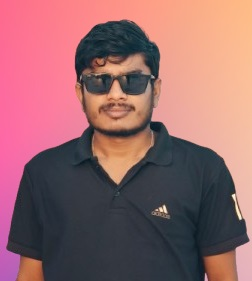
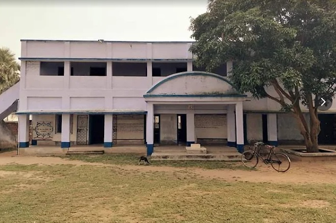
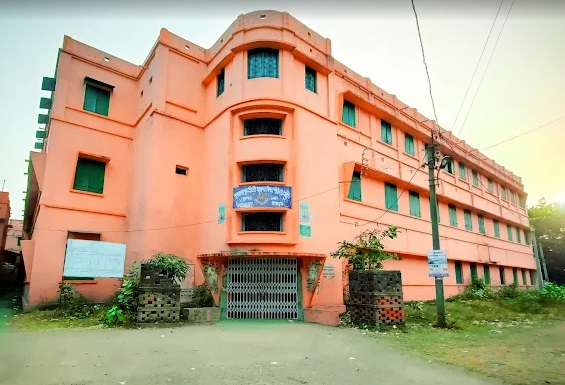

Nikunja
Ghosh
🎓 Graduate | 🖥️ Technical Support | 💻 Computer Skilled
🧾 Download Resume
💬
About Me Bot

🛠️ Skills
📝 MS Word
📈 85%
Formatting
CV & Letters
Tables
📊 MS Excel
📈 70%
Data entry
Basic formulas
🎓 Education
Madhyamik
Gerua Pahari Labanyamayee High School
Board: WBBSE
57%

Higher Secondary
Dubrajpur S.S. Sarada Vidyapith
Board: WBCHSE
65%

💼 Experience
Exito – TCS iON
Invigilator
Exam duty
Discipline
Udan Pathshala
Team Leader / Technical Support
PPT
Admin panel
🎯 Hobbies
📸 Photography
📚 Reading Books
💻 Coding
📞 +91 70299 02199
✉️ nikunja2222@gmail.com